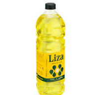
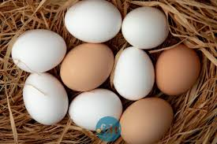
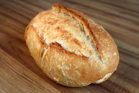

Como fazer um Pao com ovo de qualidade!!
Igredientes necessarios:
- Uma colher de chá de óleo

- 2 ovos

- 1 Pao

Passo a passo:
- Pegue uma frigideira e coloque uma colher de chá de óleo
- Pegue 2 ovos e quebra na frigideira e deixe fritar ate chegar no ponto correto
- Pegue o ovo já frito e coloque no pão

Agora é só comer!!